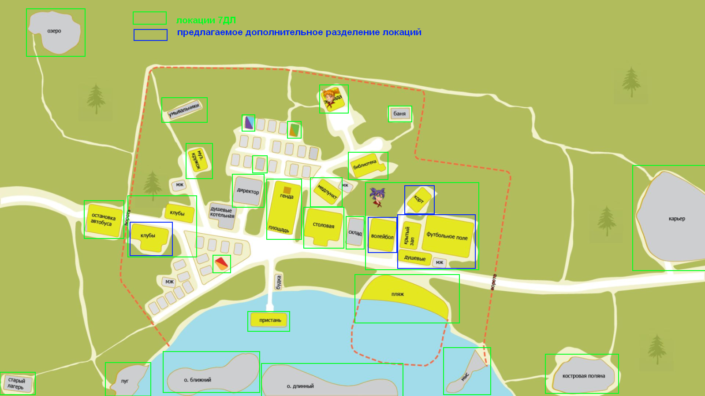
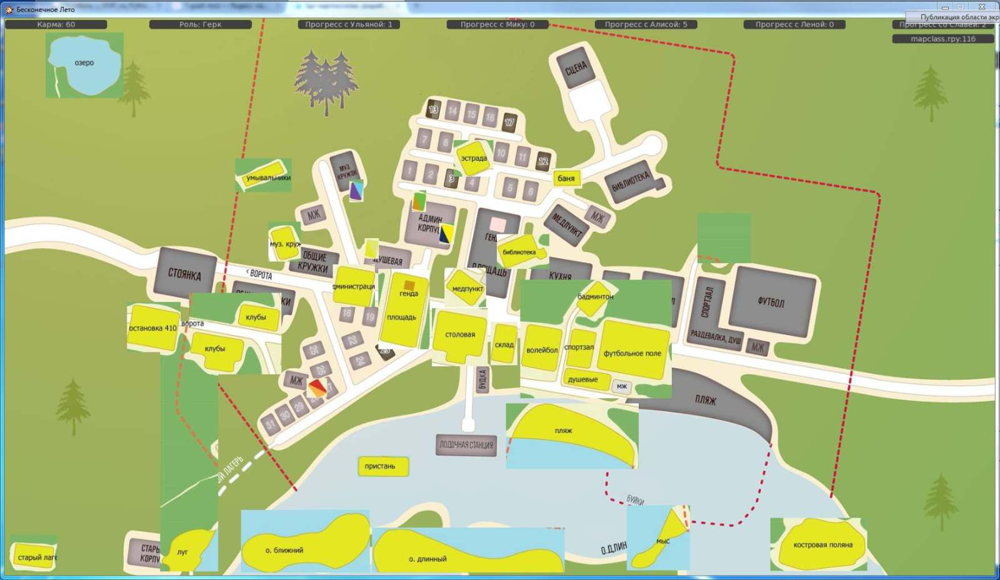
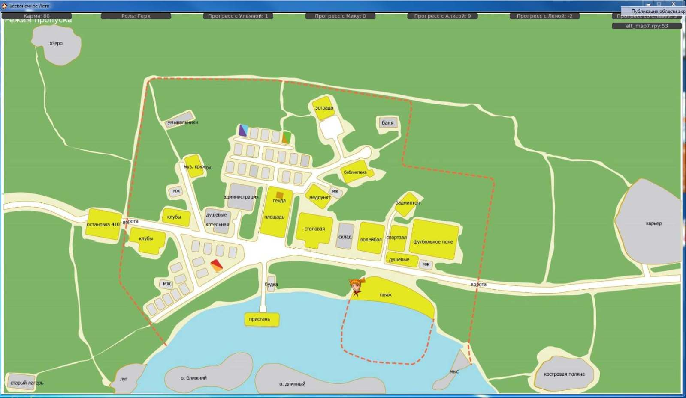
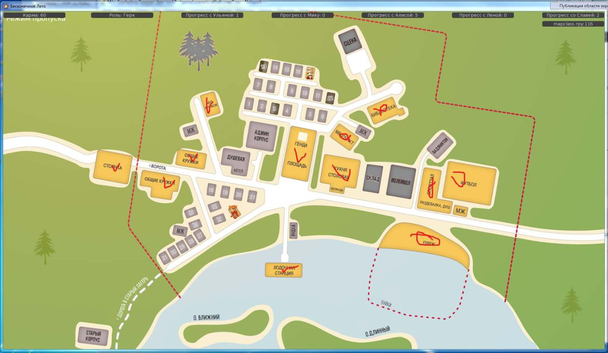
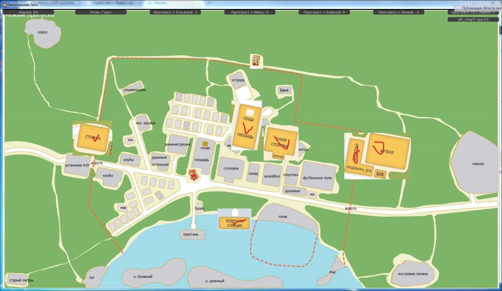
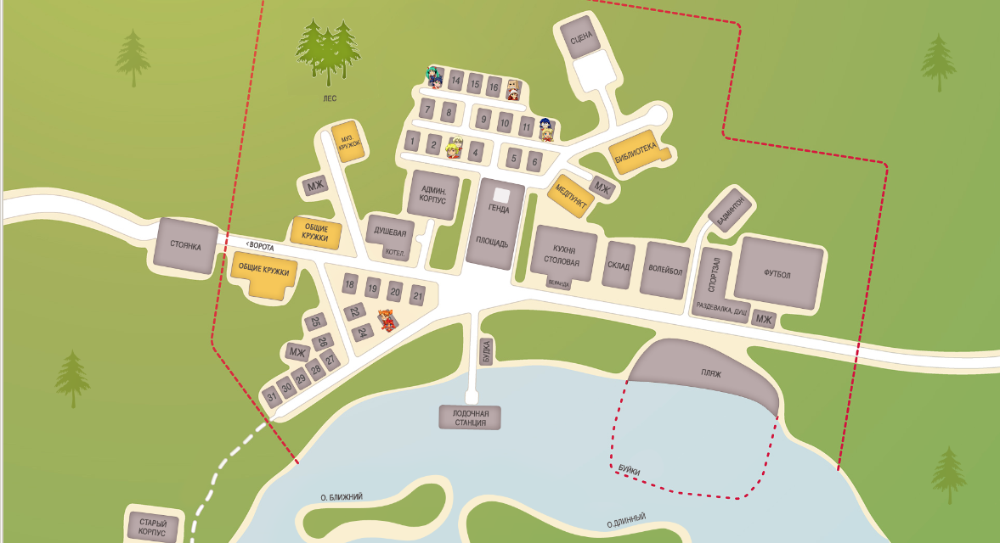
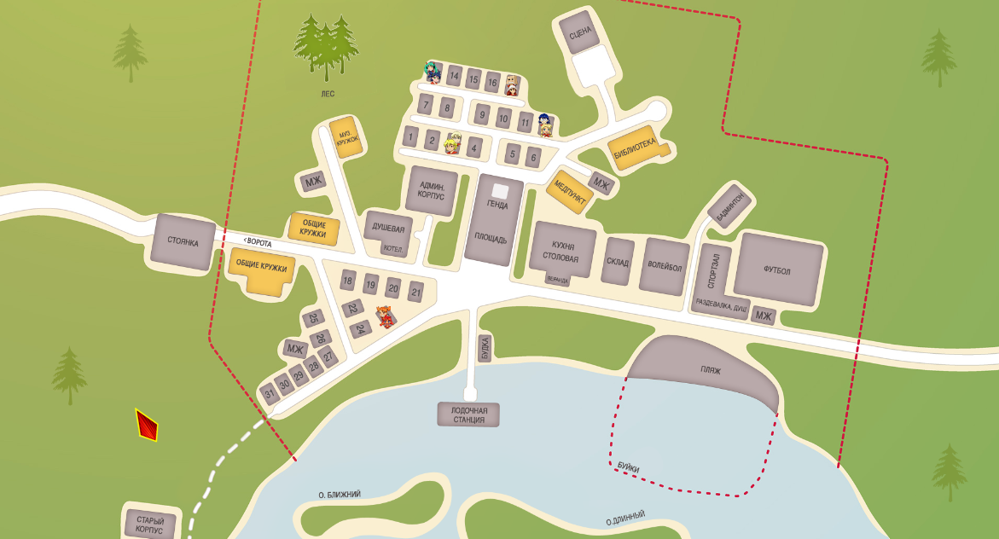
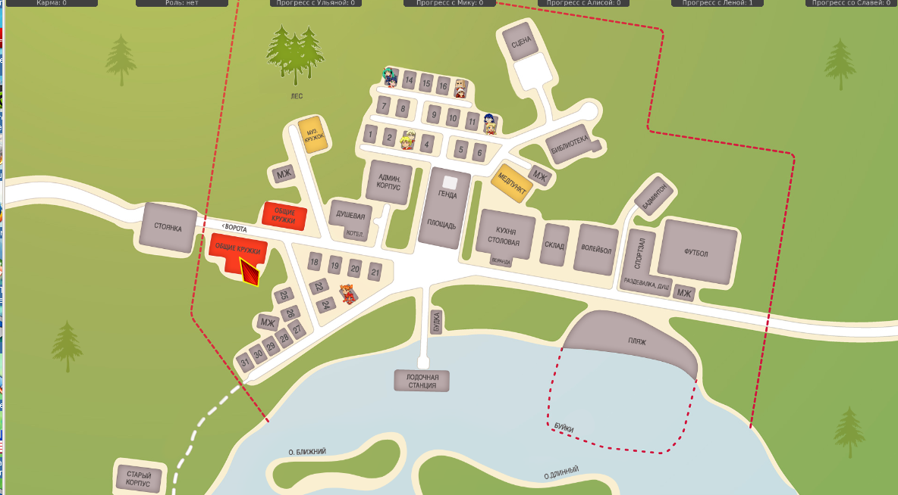
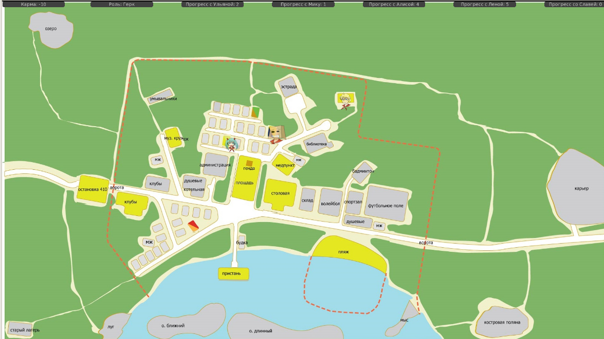
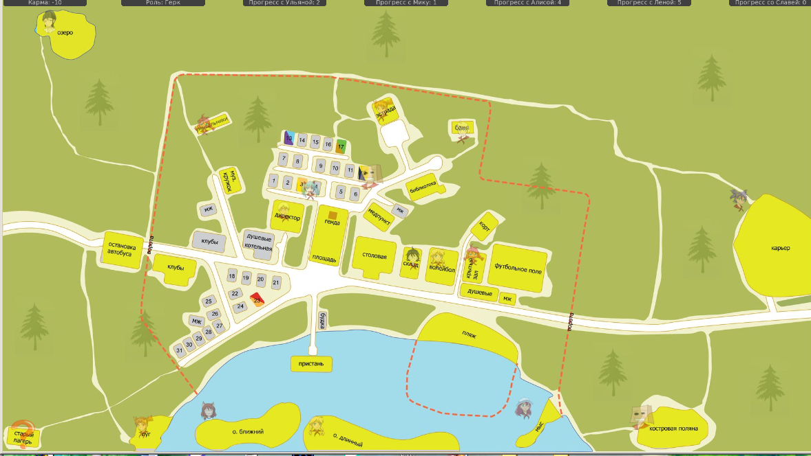

7дл-картооснова, разработка
Страница 2 из 5 •  1, 2, 3, 4, 5
1, 2, 3, 4, 5
Re: 7дл-картооснова, разработка
автор nuttyprof в Пн 6 Июл 2015 - 17:57
nuttyprof пишет:
Вариант простой в реализации, но не совсем удобный - смена карт и координат локаций через соответствующий фильтр.
День добрый.
Мне через фильтры победить проблему с выбором картоосновы и координат не удалось. Ввел переменную выбора карты, вот такой кусок прописал кода:
- Код:
init -997 python:
# включаем классическую карту и координаты
if not alt_map_on:
store.map_pics = {
"widget map": get_image_7dl("gui/maps/map_bg.jpg"),
"bgpic": get_image_7dl("gui/maps/map_bg.jpg"),
"bg map": get_image_7dl("gui/maps/map_bg.jpg"),
"avaliable": get_image_7dl("gui/maps/map_avaliable.jpg"),
"selected": get_image_7dl("gui/maps/map_selected.jpg")
}
# включаем оригинальную карту 7ДЛ
else:
store.map_pics = {
"widget map": get_image_7dl("gui/maps/7dl/7dl_bg.jpg"),
"bgpic": get_image_7dl("gui/maps/7dl/7dl_bg.jpg"),
"bg map": get_image_7dl("gui/maps/7dl/7dl_bg.jpg"),
"avaliable": get_image_7dl("gui/maps/7dl/7dl_avaliable.jpg"),
"selected": get_image_7dl("gui/maps/7dl/7dl_selected.jpg")
}
init -410 python:
if not alt_map_on:
# определяем координаты классических локаций
store.map_zones = {
"un_mi_house": {"position":[804,146,853,203],"default_bg":bg_tmp_image(u"Лена и Мику")},
"sl_mz_house": {"position":[1020,243,1079,309],"default_bg":bg_tmp_image(u"Славя и Женя")},
"el_sh_house": {"position":[843,283,891,340],"default_bg":bg_tmp_image(u"Эл и Шурик")},
"dv_us_house": {"position":[711,615,768,674],"default_bg":bg_tmp_image(u"Алиса и Ульяна")},
"shed": {"position":[1148,489,1215,583],"default_bg":bg_tmp_image(u"Склад")},
"old_house": {"position":[228,993,347,1080],"default_bg":bg_tmp_image(u"Старый корпус")},
}
else:
# определяем координаты новых оригинальных локаций
store.map_zones = {
"un_mi_house": {"position":[668,313,696,357],"7dl_bg":bg_tmp_image(u"Лена и Мику")},
"me_mt_house": {"position":[790,334,818,376],"7dl_bg":bg_tmp_image(u"Мой домик")},
"sl_mz_house": {"position":[843,396,872,438],"7dl_bg":bg_tmp_image(u"Славя и Женя")},
"estrade": {"position":[870,236,948,307],"7dl_bg":bg_tmp_image(u"Эстрада")},
"el_sh_house": {"position":[698,426,726,466],"7dl_bg":bg_tmp_image(u"Эл и Шурик")},
"music_club": {"position":[511,394,574,472],"7dl_bg":bg_tmp_image(u"Музклуб")},
"admin_house": {"position":[636,477,718,560],"7dl_bg":bg_tmp_image(u"Админкорпус")},
"wash_house": {"position":[1060,290,1120,330],"7dl_bg":bg_tmp_image(u"Баня")},
"square": {"position":[725,486,824,642],"7dl_bg":bg_tmp_image(u"Площадь")},
"dining_hall": {"position":[828,562,937,675],"7dl_bg":bg_tmp_image(u"Столовая")},
"dv_us_house": {"position":[586,698,625,735],"7dl_bg":bg_tmp_image(u"Алиса и Ульяна")},
"store_house": {"position":[942,589,994,673],"7dl_bg":bg_tmp_image(u"Склад")},
"cape": {"position":[1206,944,1329,1070],"7dl_bg":bg_tmp_image(u"Мыс")},
"sport_area": {"position":[1000,507,1294,737],"7dl_bg":bg_tmp_image(u"Спорткомплекс")},
"beach": {"position":[972,746,1230,873],"7dl_bg":bg_tmp_image(u"Пляж")},
"boat_station": {"position":[684,848,785,889],"7dl_bg":bg_tmp_image(u"Пристань")},
"old_house": {"position":[10,1001,102,1072],"7dl_bg":bg_tmp_image(u"Старый лагерь")},
"clubs": {"position":[358,532,537,690],"7dl_bg":bg_tmp_image(u"Клубы")},
"library": {"position":[954,418,1056,486],"7dl_bg":bg_tmp_image(u"Библиотека")},
"sandpit": {"position":[1343,378,1448,475],"7dl_bg":bg_tmp_image(u"Карьер")},
"medic_house": {"position":[853,484,933,560],"7dl_bg":bg_tmp_image(u"Медпункт")},
"camp_entrance": {"position":[237,550,341,647],"7dl_bg":bg_tmp_image(u"Остановка")},
"forest": {"position":[447,272,557,337],"7dl_bg":bg_tmp_image(u"Умывальники")},
"islaone": {"position":[458,953,708,1074],"7dl_bg":bg_tmp_image(u"о. Ближний")},
"islatwo": {"position":[713,987,1086,1075],"7dl_bg":bg_tmp_image(u"о. Длинный")},
"lake": {"position":[80,28,231,155],"7dl_bg":bg_tmp_image(u"Озеро")},
"meadow": {"position":[302,588,414,1072],"7dl_bg":bg_tmp_image(u"Луг")},
"campfire": {"position":[1485,968,1672,1071],"7dl_bg":bg_tmp_image(u"Костровая поляна")},
}
Переменная alt_map_on инициализируется в другом месте, причем это должно происходить раньше, чем init -997 python:
- Код:
init -1001:
# новые карты ?
$ alt_map_on = False
Если менять значение переменной в строке инициализации вручную - работают оба куска кода.
Пробовал создать фильтр, меняющий значение переменной.
Проблема: фильтр значение данной переменной не меняет, возможно, обработка фильтра происходит ДО инициализации переменной, при инициализации ей присваивается постоянное значение.
Резюме: опыт пока неудачен.
Да, и инициализация картооснов с разным приоритетом INIT - не проходит.
В одном случае: (если приоритет блоков с новой картой -996, старой :-997) на выходе новая карта и все работает, если наоборот (новая карта -997, старая -996) - либо вылет игры (ругается на зоны карты), либо движок не видит зон карты от слова вообще, т е, карту показывает, но зон на ней нет.

nuttyprof- Хикка

- Сообщения : 102
Дата регистрации : 2015-05-25
Возраст : 45
Откуда : Юг
Re: 7дл-картооснова, разработка
автор openplace в Пн 6 Июл 2015 - 21:47
Доброго вечера.7dl-kun пишет:С чибиками тоже фигня странная творится.
- Спойлер:

Разгадка найдена.
- Спойлер:

А вот Лене повезло куда как меньше. Прямоугольником локации охватывается аж пять зданий ("МЖ" не в счёт) плюс два куска леса. Если предположение о том, что чибик, будучи задействован в событии, происходящем на определённой локации, будет всегда располагаться вблизи её левого верхнего угла (который из координат [х0, у0, х1, у1] даёт х0 и у0), то подобная же бадяга будет происходить и с клубами.
Один из выходов - разделение слишком больших локаций (на рисунке - синий).
Для клубов - ну, потому что именно означенное здание Сеня видит по прибытии в лагерь, и на "заднике" показывается оно же, а каким боком второе здание и как оно задействовано, нигде явно не обозначается. Даже радиорубка находится в здании, которое заключено в синий прямоугольник.
Спорткомплекс - пока представляется только такой выход из ситуации. Грубо говоря, из одного "sport_area" делается три: "volleyball" (волейбольная площадка), "sport_area" (крытый зал, футбол и душевые) и "court" (воланчик шпурлять) с отдельными для каждой координатами. Лену вечером мы обнаруживаем на третьей из этого списка. Если делается отдельная локация, то чибик Лены будет находиться уже на более-менее правдоподобном месте.
Последний раз редактировалось: openplace (Пн 6 Июл 2015 - 22:29), всего редактировалось 1 раз(а)

openplace- Хикка
- Сообщения : 111
Дата регистрации : 2015-05-02
Re: 7дл-картооснова, разработка
автор openplace в Пн 6 Июл 2015 - 22:19
nuttyprof пишет:
День добрый.
Мне через фильтры победить проблему с выбором картоосновы и координат не удалось. Ввел переменную выбора карты, вот такой кусок прописал кода:
- Код:
init -997 python:
# включаем классическую карту и координаты
if not alt_map_on:
store.map_pics = {
"widget map": get_image_7dl("gui/maps/map_bg.jpg"),
"bgpic": get_image_7dl("gui/maps/map_bg.jpg"),
"bg map": get_image_7dl("gui/maps/map_bg.jpg"),
"avaliable": get_image_7dl("gui/maps/map_avaliable.jpg"),
"selected": get_image_7dl("gui/maps/map_selected.jpg")
}
# включаем оригинальную карту 7ДЛ
else:
store.map_pics = {
"widget map": get_image_7dl("gui/maps/7dl/7dl_bg.jpg"),
"bgpic": get_image_7dl("gui/maps/7dl/7dl_bg.jpg"),
"bg map": get_image_7dl("gui/maps/7dl/7dl_bg.jpg"),
"avaliable": get_image_7dl("gui/maps/7dl/7dl_avaliable.jpg"),
"selected": get_image_7dl("gui/maps/7dl/7dl_selected.jpg")
}
init -410 python:
if not alt_map_on:
# определяем координаты классических локаций
store.map_zones = {
"un_mi_house": {"position":[804,146,853,203],"default_bg":bg_tmp_image(u"Лена и Мику")},
"sl_mz_house": {"position":[1020,243,1079,309],"default_bg":bg_tmp_image(u"Славя и Женя")},
"el_sh_house": {"position":[843,283,891,340],"default_bg":bg_tmp_image(u"Эл и Шурик")},
"dv_us_house": {"position":[711,615,768,674],"default_bg":bg_tmp_image(u"Алиса и Ульяна")},
"shed": {"position":[1148,489,1215,583],"default_bg":bg_tmp_image(u"Склад")},
"old_house": {"position":[228,993,347,1080],"default_bg":bg_tmp_image(u"Старый корпус")},
}
else:
# определяем координаты новых оригинальных локаций
store.map_zones = {
"un_mi_house": {"position":[668,313,696,357],"7dl_bg":bg_tmp_image(u"Лена и Мику")},
"me_mt_house": {"position":[790,334,818,376],"7dl_bg":bg_tmp_image(u"Мой домик")},
"sl_mz_house": {"position":[843,396,872,438],"7dl_bg":bg_tmp_image(u"Славя и Женя")},
"estrade": {"position":[870,236,948,307],"7dl_bg":bg_tmp_image(u"Эстрада")},
"el_sh_house": {"position":[698,426,726,466],"7dl_bg":bg_tmp_image(u"Эл и Шурик")},
"music_club": {"position":[511,394,574,472],"7dl_bg":bg_tmp_image(u"Музклуб")},
"admin_house": {"position":[636,477,718,560],"7dl_bg":bg_tmp_image(u"Админкорпус")},
"wash_house": {"position":[1060,290,1120,330],"7dl_bg":bg_tmp_image(u"Баня")},
"square": {"position":[725,486,824,642],"7dl_bg":bg_tmp_image(u"Площадь")},
"dining_hall": {"position":[828,562,937,675],"7dl_bg":bg_tmp_image(u"Столовая")},
"dv_us_house": {"position":[586,698,625,735],"7dl_bg":bg_tmp_image(u"Алиса и Ульяна")},
"store_house": {"position":[942,589,994,673],"7dl_bg":bg_tmp_image(u"Склад")},
"cape": {"position":[1206,944,1329,1070],"7dl_bg":bg_tmp_image(u"Мыс")},
"sport_area": {"position":[1000,507,1294,737],"7dl_bg":bg_tmp_image(u"Спорткомплекс")},
"beach": {"position":[972,746,1230,873],"7dl_bg":bg_tmp_image(u"Пляж")},
"boat_station": {"position":[684,848,785,889],"7dl_bg":bg_tmp_image(u"Пристань")},
"old_house": {"position":[10,1001,102,1072],"7dl_bg":bg_tmp_image(u"Старый лагерь")},
"clubs": {"position":[358,532,537,690],"7dl_bg":bg_tmp_image(u"Клубы")},
"library": {"position":[954,418,1056,486],"7dl_bg":bg_tmp_image(u"Библиотека")},
"sandpit": {"position":[1343,378,1448,475],"7dl_bg":bg_tmp_image(u"Карьер")},
"medic_house": {"position":[853,484,933,560],"7dl_bg":bg_tmp_image(u"Медпункт")},
"camp_entrance": {"position":[237,550,341,647],"7dl_bg":bg_tmp_image(u"Остановка")},
"forest": {"position":[447,272,557,337],"7dl_bg":bg_tmp_image(u"Умывальники")},
"islaone": {"position":[458,953,708,1074],"7dl_bg":bg_tmp_image(u"о. Ближний")},
"islatwo": {"position":[713,987,1086,1075],"7dl_bg":bg_tmp_image(u"о. Длинный")},
"lake": {"position":[80,28,231,155],"7dl_bg":bg_tmp_image(u"Озеро")},
"meadow": {"position":[302,588,414,1072],"7dl_bg":bg_tmp_image(u"Луг")},
"campfire": {"position":[1485,968,1672,1071],"7dl_bg":bg_tmp_image(u"Костровая поляна")},
}
Переменная alt_map_on инициализируется в другом месте, причем это должно происходить раньше, чем init -997 python:
- Код:
init -1001:
# новые карты ?
$ alt_map_on = False
Если менять значение переменной в строке инициализации вручную - работают оба куска кода.
Пробовал создать фильтр, меняющий значение переменной.
Проблема: фильтр значение данной переменной не меняет, возможно, обработка фильтра происходит ДО инициализации переменной, при инициализации ей присваивается постоянное значение.
Резюме: опыт пока неудачен.
Да, и инициализация картооснов с разным приоритетом INIT - не проходит.
В одном случае: (если приоритет блоков с новой картой -996, старой :-997) на выходе новая карта и все работает, если наоборот (новая карта -997, старая -996) - либо вылет игры (ругается на зоны карты), либо движок не видит зон карты от слова вообще, т е, карту показывает, но зон на ней нет.
Возможно, что-то недостающее скрывается в mapclass.rpy классического БЛ:
- mapclass.rpy:
- Код:
# Decompiled by unrpyc: https://github.com/CensoredUsername/unrpyc
init -50 python:
global_map_result="error"
def init_map_zones_realization(zones,default):
global global_zones
global_zones=zones
for i,data in global_zones.iteritems():
data["chibi"] = None
data["label"] = default
data["avaliable"] = True
data["been_here"] = 0
class Map(renpy.Displayable):
def __init__(self,pics,chibi,default):
renpy.Displayable.__init__(self)
self.pics=pics
self.chibi=chibi
self.default = default
config.overlay_functions.append(self.overlay)
def disable_all_zones(self):
global global_zones
for name,data in global_zones.iteritems():
data["label"] = self.default
data["avaliable"] = False
data["been_here"] = 0
def enable_all_zones(self):
global global_zones
for name,data in global_zones.iteritems():
data["label"] = self.default
data["avaliable"] = True
data["been_here"] = 0
def set_zone(self,name,label):
global global_zones
global_zones[name]["label"] = label
global_zones[name]["avaliable"] = True
def reset_zone(self,name):
global global_zones
global_zones[name]["label"] = self.default
global_zones[name]["avaliable"] = False
global_zones[name]["been_here"] = 0
def enable_empty_zone(self,name):
global global_zones
self.set_zone(name,self.default)
global_zones[name]["avaliable"] = True
def reset_current_zone(self):
self.enable_empty_zone(global_map_result)
def disable_current_zone(self):
global global_zones
global_zones[global_map_result]["avaliable"] = False
def been_there(self):
global global_zones
return global_zones[global_map_result]["been_here"]
def set_chibi(self,name,ch):
global global_zones
if ch in self.chibi:
global_zones[name]["chibi"] = self.chibi[ch]
else:
global_zones[name]["chibi"] = None
def reset_chibi(self,name):
self.set_chibi(name,"")
def event(self, ev, x, y, st):
return
def render(self, width, height, st, at):
return renpy.Render(1, 1)
def zoneclick(self,name):
global global_zones
global global_map_result
store.map_enabled=False
renpy.scene('mapoverlay')
global_zones[name]["been_here"] += 1
global_map_result = name
renpy.scene()
if not not_in_rollback_or_fast_forward():
renpy.log("renpy.roll_forward_info()")
renpy.config.skipping = False
renpy.game.after_rollback = False
ui.jumps(global_zones[name]["label"])()
def overlay(self):
if store.map_enabled:
global global_zones
renpy.scene('mapoverlay')
ui.layer('mapoverlay')
for name,data in global_zones.iteritems():
if data["avaliable"]:
pos = data["position"]
ui.imagebutton(
im.Crop(self.pics["avaliable"],pos[0],pos[1],pos[2]-pos[0],pos[3]-pos[1]),
im.Crop(self.pics["selected"], pos[0],pos[1],pos[2]-pos[0],pos[3]-pos[1]),
clicked = renpy.curry(self.zoneclick)(name),
xpos = pos[0],
ypos = pos[1]
)
if data["chibi"] != None:
ui.imagebutton(
anim.Blink(data["chibi"]),
anim.Blink(data["chibi"]),
clicked = renpy.curry(self.zoneclick)(name),
xpos = pos[0],
ypos = pos[1]
)
ui.close()
store.map = Map(store.map_pics, store.map_chibi, default)
label _show_map:
scene widget map
$ store.map_enabled = True
$ ui.interact()
jump _show_map
label nothing_here:
python:
random = renpy.random.choice([
u"Тут ничего нет",
u"Мне нечего тут делать",
u"Пойду-ка я лучше еще куда-нибудь"
])
"%(random)s"
jump _show_map
openplace- Хикка
- Сообщения : 111
Дата регистрации : 2015-05-02
Re: 7дл-картооснова, разработка
автор nuttyprof в Пн 6 Июл 2015 - 22:36
Да и очень не хочется лезть куда-то, кроме мода.
Движок (ренпай), как я понял, работает так:
сначала компилирует .pry файлы в .rpyc, потом собирает конструкцию из .rpyc файлов по всей папке Game (пробовал перебрасывать - ему все равно, находит везде),
первым делом выполняются блоки init.
Сначала с высшим приоритетом и, при одинаковом приоритете, сверху вниз в коде (если в одном файле). Если в разных файлах и приоритет неодинаков - вот тут, как я понял, может возникнуть неопределенность.
Кстати, если взять "голую" классику, и на нее накатить "голый" же мод со старой картой - карта из мода также "забьет" классическую - зоны там те же, но графика отличается.
Задумка у меня была - оставить старую карту как есть, а новую подключать фильтром (инициализация старой карты, если фильтр on, переопределяем на новую). Не вышло, ни переменной, ни приоритетом.
Думаю: распаковать базу полностью (ну, или что получится), расписать приоритеты init'ов - что в каком порядке определяется, где-то должно быть определение координат локаций.
nuttyprof- Хикка
- Сообщения : 102
Дата регистрации : 2015-05-25
Возраст : 45
Откуда : Юг
Re: 7дл-картооснова, разработка
автор nuttyprof в Вт 7 Июл 2015 - 13:01
По приоритетам init'а RenPy:
Если будет прописано например, так:
- Код:
init -3:
$ alt_test = 0
init 3:
$ alt_test = 1
init:
$ alt_test = 2
переменная alt_test принимает значение 1, конфликта переменных нет.
(определения переменных могут находиться в разных файлах - размещение неважно (лишь бы в папке Game), важен приоритет).
А вот если одна и та же переменная определяется с одинаковым приоритетом в разных файлах - возникает неопределенность, и что мы получим на выходе - один всемогущий рандом ведает.
Насколько я понял, в Ренпае приоритеты init'ов могут быть в диапазоне -999...999. Числа вне этого диапазона вроде бы зарезервированы для внутреннего использования, init'ы обрабатываются по приоритетам в порядке от -999 до 999, и если определение классической карты описано с большим приоритетом, чем карты новой - классическая карта будет переопределена однозначно и корректно; а вот если приоритеты одинаковы - могут быть чудеса.
Карта в классике (версия 1.1) определяется в файле media.rpyc (строки 467..506):
- распакованный media.rpy :
тут: rghost.ru/6jgrZ8C2G
(сорри, ссылку пробовал вставить, но при вставке URL почему-то показывается какой-то рекламный сайт, потом только переход на rghost - или это так и должно быть?)
с приоритетом -997. Такой же приоритет прописан в alt_script.rpy, в котором определяется карта мода.
Одинаковые приоритеты = вот тут, кажись, и надо копать.
nuttyprof- Хикка
- Сообщения : 102
Дата регистрации : 2015-05-25
Возраст : 45
Откуда : Юг
Re: 7дл-картооснова, разработка
автор openplace в Ср 8 Июл 2015 - 23:25
nuttyprof пишет:
- Спойлер:
- Спойлер:
- Это особенность местного сервиса, на котором местится форум 7ДЛ, с этого владельцам сервиса деньги каплют. Тут ничего не поделать.
В отличие от 1.1, в 1.2 и стимоверсии определения карты лежат в том же файле, но прописаны несколько по-другому (там это строки 487-538):
- Код:
init -997 python:
def bg_tmp_image(bgname):
renpy.image("text "+bgname,LiveComposite((config.screen_width, config.screen_height),(0, 0),"#ffff7f",(50, 150),Text(u"А здесь будет фон про "+bgname, size=40, color="6A7183")))
return "text "+bgname
if _preferences.language == "english":
store.map_pics = {
"bgpic": get_image("maps/map_en.jpg"),
"available": get_image("maps/map_en_available.jpg"),
"selected": get_image("maps/map_en_selected.jpg")
}
else:
store.map_pics = {
"bgpic": get_image("maps/map.jpg"),
"available": get_image("maps/map_available.jpg"),
"selected": get_image("maps/map_selected.jpg")
}
store.map_zones = {
"me_mt_house": {"position":[825,47,1005,230],"default_bg":bg_tmp_image(u"Мой домик")},
"estrade": {"position":[1039,47,1288,230],"default_bg":bg_tmp_image(u"Эстрада")},
"music_club": {"position":[541,231,711,356],"default_bg":bg_tmp_image(u"Музклуб")},
"square": {"position":[825,357,1005,665],"default_bg":bg_tmp_image(u"Площадь")},
"dining_hall": {"position":[1006,457,1159,665],"default_bg":bg_tmp_image(u"Столовая")},
"sport_area": {"position":[1160,457,1578,665],"default_bg":bg_tmp_image(u"Спорткомплекс")},
"beach": {"position":[1160,666,1578,871],"default_bg":bg_tmp_image(u"Пляж")},
"boat_station": {"position":[825,666,1005,871],"default_bg":bg_tmp_image(u"Лодочный причал")},
"clubs": {"position":[418,357,711,665],"default_bg":bg_tmp_image(u"Клубы")},
"library": {"position":[1160,231,1288,456],"default_bg":bg_tmp_image(u"Библиотека")},
"medic_house": {"position":[1039,231,1159,456],"default_bg":bg_tmp_image(u"Медпункт")},
"camp_entrance": {"position":[278,357,417,665],"default_bg":bg_tmp_image(u"Ворота в лагерь")},
"forest": {"position":[541,47,711,230],"default_bg":bg_tmp_image(u"о. Лес")}
}
store.map_chibi = {
"?" : get_image("maps/map_icon_n00.png"),
"me": get_image("maps/map_icon_n01.png"),
"mi": get_image("maps/map_icon_n02.png"),
"sh": get_image("maps/map_icon_n03.png"),
"el": get_image("maps/map_icon_n04.png"),
"mz": get_image("maps/map_icon_n05.png"),
"mt": get_image("maps/map_icon_n06.png"),
"uv": get_image("maps/map_icon_n07.png"),
"un": get_image("maps/map_icon_n08.png"),
"us": get_image("maps/map_icon_n09.png"),
"dv": get_image("maps/map_icon_n10.png"),
"sl": get_image("maps/map_icon_n11.png"),
"cs": get_image("maps/map_icon_n12.png"),
}
openplace- Хикка
- Сообщения : 111
Дата регистрации : 2015-05-02
Re: 7дл-картооснова, разработка
автор openplace в Вс 12 Июл 2015 - 22:46
Появилось соображение.
Суть: у каждого флага/метки, вызывающего карту (за исключением скачков по карте в Алиса-7дл-руте) есть название. При достижении игроком этого флага/метки игрок видит карту и выбирает, куда ему двигаться дальше. Поскольку опытным путём было выяснено, что при текущем положении дел новая 7дл-картооснова затягивается в классический БЛ, то возникло предположение, что если собрать названия этих флагов/меток в одном месте и задать какое-то условие, то игрок, играя в 7ДЛ, будет видеть новую карту, а играя в другой мод или в классику - обычную. Другой вопрос - возможно ли это реализовать на практике.
Имеется в виду что-то наподобие такого:
- Код:
init
if alt_day2_map_prepare or if alt_day2_map or if alt_day2_mapEv_prepare:
image widget map = get_image_7dl("gui/maps/7dl/7dl_bg.jpg")
image bg map = get_image_7dl("gui/maps/7dl/7dl_bg.jpg")
else:
image widget map = get_image("images/1080/maps/map.png")
openplace- Хикка
- Сообщения : 111
Дата регистрации : 2015-05-02
Re: 7дл-картооснова, разработка
автор nuttyprof в Пн 13 Июл 2015 - 10:51
- Как я понимаю задачу:
1. Классику и прочие моды не трогаем. Вообще.
2. Там, где по сюжету должна вызываться новая карта - должна быть вызвана именно она. С новой графикой и новыми зонами.
3. Все это должно работать в том числе из-под вызова сохранений (т. е. загрузили классику - работаем со старой картой, загрузили мод - работаем с новой картой).
4. Источник графики определяется в init-блоках, до начала выполнения собственно кода. В теле программы, КМК, переопределить это уже нельзя.
5. Карта вызывается у нас в том числе процедурой? функцией? show_map().
6. show_map(). НЕ определяется в mapklass.rpy, но передает управление туда.
Пока не понял точно - объект "карта" = map может быть только один, или их можно определить 2 и больше и вызвать нужный,
например:- Код:
....
1000 $ show_map()
....
2000 $ show_map_alt()
....
1500 scene bg map
....
2500 scene bg map_alt
....
Для map_alt определяем в init'е свою графику, свои зоны и (возможно), своих чибиков.- Спойлер:
Пытался определить две карты и две процедуры их вызова. Не преуспел - вылеты. По разным причинам. То компилляцию не проходит, то уже слетаем непосредственно при вызове карты.
Сейчас сижу раскуриваю все что удалось накопать в исходниках собственно классики и ренпая, "с конца" - от show_map().
nuttyprof- Хикка
- Сообщения : 102
Дата регистрации : 2015-05-25
Возраст : 45
Откуда : Юг
Re: 7дл-картооснова, разработка
автор openplace в Пн 13 Июл 2015 - 22:02
mapclass.rpy не трогал, потому по п.6 могу только предполагать. А в целом всё примерно так и обстоит, особенно п.4. Наиболее явно это выражено в media.rpy БЛ 1.2, строчки 47-56 (или 46-55, если в первой строчке нету комментария):nuttyprof пишет:Доброе утро. Пробовал всяко (и до сих пор пробую) вариант с ДВУМЯ картами.
- Как я понимаю задачу:
1. Классику и прочие моды не трогаем. Вообще.
2. Там, где по сюжету должна вызываться новая карта - должна быть вызвана именно она. С новой графикой и новыми зонами.
3. Все это должно работать в том числе из-под вызова сохранений (т. е. загрузили классику - работаем со старой картой, загрузили мод - работаем с новой картой).
4. Источник графики определяется в init-блоках, до начала выполнения собственно кода. В теле программы, КМК, переопределить это уже нельзя.
5. Карта вызывается у нас в том числе процедурой? функцией? show_map().
6. show_map(). НЕ определяется в mapklass.rpy, но передает управление туда.
- Код:
init:
define dis = Dissolve(0.5, alpha=True)
$ flash = Fade(.25, 0, .75, color="#fff")
$ none = "images/misc/none.png"
image NoneImage = "images/misc/none.png"
image black = "#000"
image white = "#fff"
image bg black = "#000"
image bg white = "#fff"
image bg map = get_image("maps/map_available.jpg")
- Код:
init:
if _preferences.language == "english":
image widget map = get_image("maps/map_en.jpg")
else:
image widget map = get_image("maps/map.jpg")
init -997 python:
def bg_tmp_image(bgname):
renpy.image("text "+bgname,LiveComposite((config.screen_width, config.screen_height),(0, 0),"#ffff7f",(50, 150),Text(u"А здесь будет фон про "+bgname, size=40, color="6A7183")))
return "text "+bgname
if _preferences.language == "english":
store.map_pics = {
"bgpic": get_image("maps/map_en.jpg"),
"available": get_image("maps/map_en_available.jpg"),
"selected": get_image("maps/map_en_selected.jpg")
}
else:
store.map_pics = {
"bgpic": get_image("maps/map.jpg"),
"available": get_image("maps/map_available.jpg"),
"selected": get_image("maps/map_selected.jpg")
}
openplace- Хикка
- Сообщения : 111
Дата регистрации : 2015-05-02
Re: 7дл-картооснова, разработка
автор nuttyprof в Вт 14 Июл 2015 - 1:47
Удалось добиться того, что во 2 дне показываются разные карты (на обходе утром одна, в вечерних событиях другая), но, увы, пока только основной слой. Зоны в картах - одинаковые.
- Дальше пробую:
создать дочерний класс от класса Map, методы которого и определяют "поведение" карты, в том числе - положение зон, но с некоторыми измененными аргументами и функциями.
Разбираюсь пока в механике работы класса карт, с тем, чтобы при вызове экземпляра карты можно бы было указать, какую именно карту нам надо вызвать, в существующем это, видимо, не предусмотрено.
nuttyprof- Хикка
- Сообщения : 102
Дата регистрации : 2015-05-25
Возраст : 45
Откуда : Юг
Re: 7дл-картооснова, разработка
автор openplace в Вт 14 Июл 2015 - 3:07
Доброго.nuttyprof пишет:Вечер добрый.
Удалось добиться того, что во 2 дне показываются разные карты (на обходе утром одна, в вечерних событиях другая), но, увы, пока только основной слой. Зоны в картах - одинаковые.
- Дальше пробую:
создать дочерний класс от класса Map, методы которого и определяют "поведение" карты, в том числе - положение зон, но с некоторыми измененными аргументами и функциями.
Разбираюсь пока в механике работы класса карт, с тем, чтобы при вызове экземпляра карты можно бы было указать, какую именно карту нам надо вызвать, в существующем это, видимо, не предусмотрено.
Две разных карты в одном дне? Уже хоть что-то. Здорово.
- Спойлер:
- В оригинальном мапклассе действительно не замечено явно что-либо, ответственное за появление определённого вида карты. В прошлом после приводился кусок из media.rpy 1.2, но там, хотя и есть условие выбора (язык), координаты остаются те же, что никак не меняет дела.
Попробовал сотворить что-нибудь с alt_exta_map.rpy (естественно, подчистив совпадения с alt_script.rpy)
https://yadi.sk/d/eCmUmLPnhqykM
Естественно, это хтоническое чудовище не захотело работать, ссылаясь вначале на ошибки синтаксиса, а затем что-то там про identation mismatch. Впрочем, это всё удаётся убрать, попросту удалив часть с else, на что было получен трейсбэк про то, что переменная alt_day2_map_prepare не задана.
Значит, идея собрать в одном месте все переменные дней, после которых идёт использование карты, в одном месте, была занятной, но неверной. Нужно что-то другое.
openplace- Хикка
- Сообщения : 111
Дата регистрации : 2015-05-02
Re: 7дл-картооснова, разработка
автор nuttyprof в Вт 14 Июл 2015 - 4:05
nuttyprof- Хикка
- Сообщения : 102
Дата регистрации : 2015-05-25
Возраст : 45
Откуда : Юг
Re: 7дл-картооснова, разработка
автор nuttyprof в Чт 16 Июл 2015 - 12:49
Раскопки кода продолжаются. Удалось достигнуть некоторых эффектов
- Спойлер:
- не совсем то, что хотелось, но приблизило к пониманию процесса.
Созданы два класса карт (думаю, может их и больше быть - по классу на каждую нужную нам карту).
А дальше идут варианты:
- Спойлер:
- опыты ставились на втором дне мода; подписание бегунка - на классической карте, вечерние события - на новой карте
а) классы объявляем одновременно (приоритет init'ов "-50" - как в классике).
- Так выгладит карта утром:

Подложка - то, что и надо, а вот зоны карты выводятся ВСЕ из нового класса и нет перехода по меткам.
- А вот так выгладит карта вечером:

То есть - все работает, как надо.
б) новый класс объявляем с приоритетом "-51" - т. е. раньше, дабы избежать неоднозначности:
- Карта утром выгладит так:

То есть - все работает, как надо.
На вид карты не обращайте внимания - специально поиздевался над копиями
- Зато вечером вот так:

Подложка правильная, Зоны на карте - из утренних событий, работают притом. Клик по зоне - естественно, переход на утренние события ))).
В общем, ищу дальше.
UPD
Лучей добра погромистам классики, раскидавшим связанный код инициализации по разным файлам с одинаковым приоритетом.
- Боюсь сглазить:
но кажется получилось.
ДВЕ РАЗНЫЕ карты работают, каждая со своими
каждая со своими блэкджекомрабочими зонами и...нет, чибиков пока не копал подробно, ну да там все аналогично должно делаться.
Сейчас оптимизирую код, вечером выложу сборку на "попробовать"
nuttyprof- Хикка
- Сообщения : 102
Дата регистрации : 2015-05-25
Возраст : 45
Откуда : Юг
Re: 7дл-картооснова, разработка
автор openplace в Чт 16 Июл 2015 - 22:44
Доброго.nuttyprof пишет:День добрый.
Раскопки кода продолжаются. Удалось достигнуть некоторых эффектов
- Спойлер:
Созданы два класса карт (думаю, может их и больше быть - по классу на каждую нужную нам карту).
А дальше идут варианты:
- Спойлер:
а) классы объявляем одновременно (приоритет init'ов "-50" - как в классике).
- Так выгладит карта утром:
Подложка - то, что и надо, а вот зоны карты выводятся ВСЕ из нового класса и нет перехода по меткам.
- А вот так выгладит карта вечером:
То есть - все работает, как надо.
б) новый класс объявляем с приоритетом "-51" - т. е. раньше, дабы избежать неоднозначности:
- Карта утром выгладит так:
То есть - все работает, как надо.
На вид карты не обращайте внимания - специально поиздевался над копиями
- Зато вечером вот так:
Подложка правильная, Зоны на карте - из утренних событий, работают притом. Клик по зоне - естественно, переход на утренние события ))).
В общем, ищу дальше.
UPD
Лучей добра погромистам классики, раскидавшим связанный код инициализации по разным файлам с одинаковым приоритетом.
- Боюсь сглазить:
но кажется получилось.
ДВЕ РАЗНЫЕ карты работают,блэкджекомрабочими зонами и...нет, чибиков пока не копал подробно, ну да там все аналогично должно делаться.
Сейчас оптимизирую код, вечером выложу сборку на "попробовать"
Отлично, сборку ждём! Всё ж таки интересно увидеть, как оно теперь будет построено.
openplace- Хикка
- Сообщения : 111
Дата регистрации : 2015-05-02
Re: 7дл-картооснова, разработка
автор nuttyprof в Чт 16 Июл 2015 - 22:55
Версия игры: 1.1
Релиз мода: 019h + хотфикс2
(для 1.2 и стима пока нет).
Нужно из папки установленной игры удалить папку scenario_alt и на ее место записать ту, что в архиве.
Сохранения могут работать (у меня работали, тестил как раз с сохранений: классика (момент перед бегунком), второй день (перед бегунком и перед вечерними событиями соответственно), но не гарантированно, если будет игра слетать - нужно пробовать пройти заново.
Архив тут: https://yadi.sk/d/jvKr_Xwvhuo7m
- Что в архиве:
Преамбула. В классике имеется собственная карта (та, которая с нарисованными чибиками); для классики (проверено) и для других модов (предполагаю, не проверял) будет использоваться именно она.
Для мода предлагается две карты:
т.н. "малая" - картинки с которой лежат в папке \scenario_alt\Pics\gui\maps ;
и "большая" - с дополнительными зонами, картинки в папке \scenario_alt\Pics\gui\maps\7dl
координаты зон "малой" карты взяты из мода (релиз 019h):
координаты зон "большой" карты выкладывал openplace в этом сообщении
описание координат слегка изменено, а именно:
- новая зона "клуб кибернетиков" - только нижнее здание, есть возможность выбрать "клубы" целиком;
- "спортивный комплекс" разделен на три зоны (есть возможность выбрать целиком и его):
- "волейбольная площадка":
- "теннисный корт";
- "футбольное поле и спортзал" (в принципе, при желании можно эти зоны разделить);
- уточнены координаты некоторых локаций.
Описания, вызовы и обработку чибиков не трогал, буде возникнет необходимость - можно реализовать аналогично.
Добавлены два новых файла с описанием карт, в них вроде бы собрал все, что к картам относится:
- alt_map7_small.rpy - для "малой" карты;
- alt_map7_small.rpy - для большой карты;
Изменены файлы:
- alt_res.rpy - закомментированы строки 145, 146 - источник изображений для подложки карты (определяется в файлах карт);
- alt_script.rpy - закомментированы строки 243..259 - источник изображений для карт и описание дополнительных зон (также определяется в файлах карт):
- возможно: в файле alt_script.rpy надо будет дополнительно закомментировать строки 222..232 - процедуру отключения чибиков (она также в файле карт).
Файл для проверки:
- alt_day2.rpy (внесены изменения в функции вызова и обработки карт).
Во второй день происходит два "гуляния" по карте:
1. Обход с бегунком. Должна показываться "малая" карта.
2. Вечерние события. Должна показываться "большая" карта.
Для проверки работы карты включены ВСЕ (ну, почти) доступные зоны и установлены чибики (рандомно);
Клик по зоне без чибика (или с чибиком, который возникает по сюжету - например Алиса на эстраде или пляже, Лена в домике или! на бадминтонном корте) вызовет развитие сюжета, клик по тестовой зоне с чибиком вызовет текстовое сообщение, сброс зоны и чибика и возврат).
Третий день и дальше - код не менялся !!! , будет показана карта "по умолчанию" - классика.
Да, еще. Карты, определенные в моде, необходимо вызывать явно.
Для вызова и обработки "малой" карты к командам добавляется суффикс _alt1; для "большой" карты - _alt2.
Например:- Код:
....
$ show_map() # "классическая" карта;
....
$ show_map_alt1() # "малая" карта;
....
$ show_map_alt2() # "большая" карта.
....
То же самое касается и "ключей" локаций :- Код:
...
$ set_zone_alt1('beach_alt1', 'alt_day2_event_beach')
...
$ set_zone_alt2('beach_alt2', 'alt_day2_eventEv_beach')
...
Нашел, кстати, сам у себя косяк:
- при проходе с начала или с сохранения до момента инициализации зон на карте = все идет нормально.
- а вот если идти с сохранения ХХ, которое было, так сказать, в разгар событий на карте (сохранились из мода, загрузили какое-либо сохранение классики, поиграли, загрузили сохранение мода ХХ : рандомно случаются чудеса: могут самопроизвольно отключиться зоны (как будто мы уже прошли их), было и так, что подгружалась "классическая" карта с пустыми зонами (т. е зона доступна, но там "ничего нет").
nuttyprof- Хикка
- Сообщения : 102
Дата регистрации : 2015-05-25
Возраст : 45
Откуда : Юг
Re: 7дл-картооснова, разработка
автор openplace в Чт 16 Июл 2015 - 23:08
openplace- Хикка
- Сообщения : 111
Дата регистрации : 2015-05-02
Re: 7дл-картооснова, разработка
автор nuttyprof в Пт 17 Июл 2015 - 12:50
Пофикшены неработающие сохранения на новых картах.
После установки фикспакета старые сохранения не будут работать точно, игру проходим с самого начала.
Фикспакет к вот этой выкладке
брать тут: https://yadi.sk/d/SQULl_kjhvDnb
- В архиве:
В архиве три файла, копируем их с перезаписью в папку scenario_alt.
Изменения небольшие: инициализация зон карт должна проводиться только один раз, при запуске мода,
поэтому инициализация зон карт перенесена из блока Init под метку запуска мода.
UPD. Проверил пару посторонних модов - туда подтягивается "классическая" карта; даже недописанный мод от лица Алисы ожил (до этого ругался на какой-то отсутствующий ключ в зонах карты)
nuttyprof- Хикка
- Сообщения : 102
Дата регистрации : 2015-05-25
Возраст : 45
Откуда : Юг
Re: 7дл-картооснова, разработка
автор openplace в Пт 17 Июл 2015 - 22:47
Результаты сегодняшних тестов таковы: новая карта действительно не конфликтует ни с классикой, ни с модами:
- Возвращение в Совёнок, Лена-рут, день 2:

- классика, день 2:

- Второй шанс, Лена-рут, день 2:

По картам в 7ДЛ: выправил координаты в малой карте, а то там наблюдалось почти что наложение зон. В частности, при попытке выбрать домик вожатой засвечивался и домик Лены с Мику. Впрочем, на события это не влияло. Ну и ещё кое-чего по мелочи было. Исправленная версия малой карты здесь: https://yadi.sk/d/vGNMLG0PhvtwW
Большая карта работает, но локации удалось выбрать не все:
- 7дл, день 2, вечер:

openplace- Хикка
- Сообщения : 111
Дата регистрации : 2015-05-02
Re: 7дл-картооснова, разработка
автор nuttyprof в Пт 17 Июл 2015 - 23:43
- Могу, конечно, ошибаться:
но элементы карты располагаются на разных слоях:
1) снизу основа;
2) выше - локации, которые суть графические кнопки; у них предусмотрено два изображения: одно показывается по умолчанию, второе - если на зону наведен курсор мыша. Изображения "режет" функция класса Map из графических файлов (которые _avaliable и _selected) по "разметке", которая указана в описании зон карты. Если кнопку сделать видимой (командой set_zone()) - она выводится на свой слой - в зону, описанную координатами. Поэтому важно совпадение всех трех карт в комплекте - иначе могут не совпадать линии на карте и кнопках;
3) еще выше - чибики, которые привязываются верхним левым углом своего "прямоугольника" к верхнему левому углу прямоугольника зоны (это точно, привязка в коде). Чибики тоже суть графические кнопки.
И если изображение чибика больше прямоугольника зоны - он ее перекроет.
Если чибик не попал в закрашенную локацию - значит, зона локации "вырезана" больше, чем надо.
По определению в коде эти кнопки (чибики) тоже кликабельны и "возвращают" ключ зоны, для которой определены - так что можно жать прямо на них.
Я "вскрывал" все зоны, нажимая как раз на чибика.
nuttyprof- Хикка
- Сообщения : 102
Дата регистрации : 2015-05-25
Возраст : 45
Откуда : Юг
Re: 7дл-картооснова, разработка
автор openplace в Сб 18 Июл 2015 - 0:04
Попробовал ещё раз. Всё верно: те зоны, которые малы, открываются по щелчку на чибик. Как, впрочем, и остальные, куда посажены чибики. Значит, по этому пункту - ложная тревога.nuttyprof пишет:Добрый вечер.
- Могу, конечно, ошибаться:
но элементы карты располагаются на разных слоях:
1) снизу основа;
2) выше - локации, которые суть графические кнопки; у них предусмотрено два изображения: одно показывается по умолчанию, второе - если на зону наведен курсор мыша. Изображения "режет" функция класса Map из графических файлов (которые _avaliable и _selected) по "разметке", которая указана в описании зон карты. Если кнопку сделать видимой (командой set_zone()) - она выводится на свой слой - в зону, описанную координатами. Поэтому важно совпадение всех трех карт в комплекте - иначе могут не совпадать линии на карте и кнопках;
3) еще выше - чибики, которые привязываются к верхнему левому углу прямоугольника зоны (это точно, привязка в коде). Чибики тоже суть графические кнопки.
И если изображение чибика больше прямоугольника зоны - он ее перекроет.
По коду эти кнопки (чибики) тоже кликабельны и "возвращают" ключ зоны, для которой определены - так что можно жать прямо на них.
Я "вскрывал" все зоны, нажимая как раз на чибика.
- по всему остальному:
- Дело с картой обстоит именно так, да. Карта содержит три картинки: базовая (bg), avaliable и selected. По умолчанию показывается базовая. Задавая координаты, мы формируем графические кнопки, через которые будет показываться avaliable и selected. Что именно будет показываться - задаётся set_zone, да.
Когда задано то, что будет показываться, то мы, дойдя до того момента, где в коде написано set_zone, видим в игре на экране сочетание bg (базового слоя) и avaliable: что-то осталось серым, а что-то загорелось жёлтым. Наводя курсор мыши на локацию, светящуюся жёлтым, мы тем самым активируем графическую кнопку, заставляя показываться selected и светиться локацию красным. Как только кнопка нажата - начинает происходить событие, написанное под данную конкретную локацию в данном конкретном дне.
Совпадение всех трёх карт в комплекте действительно важно, иначе будут искажения. Впрочем, они видны и на последнем скрине. Не случайно требуемый размер всех трёх картинок - 1920х1080 и крайне желательно расположение всех объектов на всех картинках карты в одних и тех же местах.
Впрочем, графика - это наиболее легко поправимая часть карты. От искажений можно избавиться. Заодно и надписи вместе с цветом леса поправлю.
От искажений можно избавиться. Заодно и надписи вместе с цветом леса поправлю.
openplace- Хикка
- Сообщения : 111
Дата регистрации : 2015-05-02
Re: 7дл-картооснова, разработка
автор openplace в Пн 20 Июл 2015 - 2:06
https://yadi.sk/d/KaUqKkIwhxUFq - архив с тремя частями большой карты и координатами малой.
https://yadi.sk/d/C0Kki5DjhxUGi - редактируемый исходник.
openplace- Хикка
- Сообщения : 111
Дата регистрации : 2015-05-02
Re: 7дл-картооснова, разработка
автор openplace в Пн 20 Июл 2015 - 2:08
- чибики спойманы на моменте моргания и поэтому такие бледные:

openplace- Хикка
- Сообщения : 111
Дата регистрации : 2015-05-02
Re: 7дл-картооснова, разработка
автор nuttyprof в Пн 20 Июл 2015 - 13:34
- Кусок кода есть в media.rpy:
Строки 462..465- Код:
init -997 python:
def bg_tmp_image(bgname):
renpy.image("text "+bgname,LiveComposite((config.screen_width, config.screen_height),(0, 0),"#ffff7f",(50, 150),Text(u"А здесь будет фон про "+bgname, size=40, color="6A7183")))
return "text "+bgname
в описаниях альтернативных карт я ее не переопределял, покопаю насчет возможных подводных камней
nuttyprof- Хикка
- Сообщения : 102
Дата регистрации : 2015-05-25
Возраст : 45
Откуда : Юг
Re: 7дл-картооснова, разработка
автор openplace в Пн 20 Июл 2015 - 15:49
Попробую пока повставлять малую карту в руты и третий день вместо той, что по умолчанию.
- Спойлер:
- Была мысль попробовать встроить большую карту в Лена-7дл-рут, в 6-й день, по типу того, как это сделано с малой картой в Мику-диджей-руте в 5-м дне. Это стало бы главной проверкой.
openplace- Хикка
- Сообщения : 111
Дата регистрации : 2015-05-02
Re: 7дл-картооснова, разработка
автор openplace в Пн 20 Июл 2015 - 20:08
- по карте лены-7дл, 6 день:
- Код:
label alt_day6_un_7dl_mapprepare:
window hide
$ alt_chapter(6, u"Лена. 7ДЛ. В поисках Лены!")
$ day_time()
$ persistent.sprite_time = "day"
$ disable_all_zones_alt2()
$ disable_all_chibi_alt2()
$ set_zone_alt2('un_mi_house_alt2', 'alt_day6_un_7dl_un_mi_house')
$ set_chibi_alt2('un_mi_house_alt2', '?')
$ set_zone_alt2('library_alt2', 'alt_day6_un_7dl_library')
$ set_chibi_alt2('library_alt2', '?')
$ set_zone_alt2('sandpit_alt2, 'alt_day6_un_7dl_sandpit')
$ set_chibi_alt2('sandpit_alt2', '?')
$ set_zone_alt2('dv_us_house_alt2', 'alt_day6_un_7dl_dv_us_house')
$ set_chibi_alt2('dv_us_house_alt2', '?')
$ set_zone_alt2('estrade_alt2', 'alt_day6_un_7dl_estrade')
$ set_chibi_alt2('estrade_alt2', '?')
$ set_zone_alt2('music_club_alt2', 'alt_day6_un_7dl_estrade')
$ set_chibi_alt2('music_club_alt2', '?')
jump alt_day6_un_7dl_map
label alt_day6_un_7dl_map:
scene black with fade
openplace- Хикка
- Сообщения : 111
Дата регистрации : 2015-05-02
Страница 2 из 5 • 1, 2, 3, 4, 5